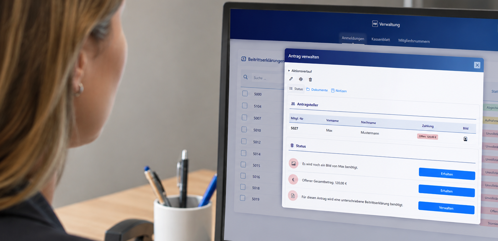

Making membership administration easier to manage.
A Django platform for Berlin's largest swimming club that digitizes membership applications, payments, and documents while preserving established office workflows.

This image contains AI-generated elements. The software interface shown is representative of the actual application.
Project timeline · Nov 2023 – Dec 2026
Important work was spread across too many manual steps.
Managing more than 5,000 active memberships involves applications, payments, documents, communication, and recurring checks. At the outset, handwritten paper forms had to pass through several time-consuming processing steps.
The goal was to reduce manual work by digitizing membership applications, application processing, and payment administration without disrupting established workflows. The platform needed to reflect the club's business rules and statutes while giving staff a clear overview of processing status, members, payments, and documents.
One platform shaped around the team's daily work.
I took technical responsibility for the project, working independently from process analysis and system design through implementation. I coordinated features and interfaces with stakeholders and users to translate the club's rules into practical workflows for joining, member administration, family payments, and contracts.
Clear boundaries for complex business processes.
I separated the API from the interface and organized business logic in a service layer. Django models capture relationships and constraints, supported by migrations, CRUD workflows, and role-based permissions. REST APIs built with Django REST Framework provide member, payment, and document data to responsive interfaces using HTML, CSS, JavaScript, and Bootstrap.
A dedicated copy view helps staff transfer application data into the club's main system, keeping the existing hand-off in the workflow.
Less repetitive work, from deployment to daily operations.
To ensure reliable testing and deployment, I developed an on-premises CI/CD pipeline for reliable testing and deployment of the project on the client's host. Explore the full maintenance process.
ReportLab generates PDFs for contracts, guarantees, and daily closing reports. Celery and Redis run asynchronous jobs for periodic consistency checks and automated cleanup of implausible database entries, and make daily closing reports available on a network drive.
Maintaining confidence as the platform evolves.
I developed unit tests for all core processes and used manual and AI-assisted code reviews to identify security findings. Security remediation, negative and regression tests, and targeted refactoring support the platform's security and maintainability.
Less administrative friction and more confidence.
The office team gains a shared source of information and can follow the status of a membership without piecing it together from different places. Standard tasks become faster and more consistent, and new functions can be added as the organization develops.
For a prospective employer or client, this project demonstrates my ability to understand a complex organization, communicate with non-technical stakeholders, and take long-term ownership of business-critical software.